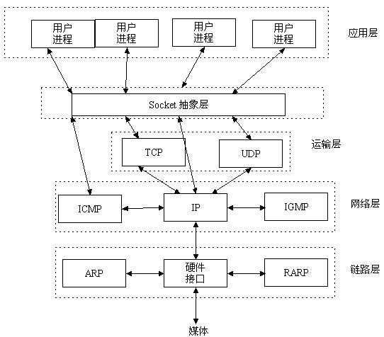

最近需要写一个通过客户端向某一主板发送 UDP 消息的 Demo，之前只是简单了解过 AsyncSocket 这个框架，正好借此机会深入了解一下。
TCP/IP
TCP/IP（Transmission Control Protocol/Internet Protocol）即传输控制协议/网间协议，定义了主机如何连入因特网及数据如何再它们之间传输的标准。
从字面意思来看 TCP/IP 是 TCP 和 IP 协议的合称，但实际上 TCP/IP 协议是指因特网整个 TCP/IP 协议族。不同于 OSI 模型的七个分层，TCP/IP 协议参考模型把所有的 TCP/IP 系列协议归类到四个抽象层中：
-
应用层：TFTP，HTTP，SNMP，FTP，SMTP，DNS，Telnet 等等
-
传输层：TCP，UDP
-
网络层：IP，ICMP，OSPF，EIGRP，IGMP
-
数据链路层：SLIP，CSLIP，PPP，MTU
每一抽象层建立在低一层提供的服务上，并且为高一层提供服务。
什么是 Socket
Socket 又称"套接字"，应用程序通常通过"套接字"向网络发出请求或者应答网络请求。是在应用层和传输层之间的一个抽象层，它把 TCP/IP 层复杂的操作抽象为几个简单的接口供应用层调用已实现进程在网络中通信。

关于三次握手和其他相关知识的详细内容在此就不在赘述了，有机会我再补充，现在有兴趣的可以看一下：
AsyncSocket
AsyncSocket 是在 iOS 上比较火的一个第三方库，对socket的封装比较好。
下载 AsyncSocket 库，或者用 pod 也可以，其中核心文件为
AsyncSocket.h,
AsyncSocket.m,
AsyncUdpSocket.h,
AsyncUdpSocket.m
必须保证这四个文件在工程之中。
UDP
一般来说，一个用户（对于 iOS 来说也就是我们的项目中）只能有一个正在连接的 socket，所以这个 socket 变量必须是全局的，这里可以考虑使用单例或是AppDelegate 进行数据共享，本文使用单例。
先分享一个单例宏，这样写单例的时候只需要在声明和实现中各写一行代码就完事了。
// .h文件的实现
#define SingletonH(methodName) + (instancetype)shared##methodName;
// .m文件的实现
#if __has_feature(objc_arc) // 是ARC
#define SingletonM(methodName) \
static id _instace = nil; \
+ (id)allocWithZone:(struct _NSZone *)zone \
{ \
if (_instace == nil) { \
static dispatch_once_t onceToken; \
dispatch_once(&onceToken, ^{ \
_instace = [super allocWithZone:zone]; \
}); \
} \
return _instace; \
} \
\
- (id)init \
{ \
static dispatch_once_t onceToken; \
dispatch_once(&onceToken, ^{ \
_instace = [super init]; \
}); \
return _instace; \
} \
\
+ (instancetype)shared##methodName \
{ \
return [[self alloc] init]; \
} \
+ (id)copyWithZone:(struct _NSZone *)zone \
{ \
return _instace; \
} \
\
+ (id)mutableCopyWithZone:(struct _NSZone *)zone \
{ \
return _instace; \
}
#else // 不是ARC
#define SingletonM(methodName) \
static id _instace = nil; \
+ (id)allocWithZone:(struct _NSZone *)zone \
{ \
if (_instace == nil) { \
static dispatch_once_t onceToken; \
dispatch_once(&onceToken, ^{ \
_instace = [super allocWithZone:zone]; \
}); \
} \
return _instace; \
} \
\
- (id)init \
{ \
static dispatch_once_t onceToken; \
dispatch_once(&onceToken, ^{ \
_instace = [super init]; \
}); \
return _instace; \
} \
\
+ (instancetype)shared##methodName \
{ \
return [[self alloc] init]; \
} \
\
- (oneway void)release \
{ \
\
} \
\
- (id)retain \
{ \
return self; \
} \
\
- (NSUInteger)retainCount \
{ \
return 1; \
} \
+ (id)copyWithZone:(struct _NSZone *)zone \
{ \
return _instace; \
} \
\
+ (id)mutableCopyWithZone:(struct _NSZone *)zone \
{ \
return _instace; \
}
#endif
把这个加在单例类的声明之中然后
@interface AKUdpSocketSingleton : NSObject
/// 获取单例
SingletonH(AKUdp)
@end
@implementation AKUdpSocketSingleton
SingletonM(AKUdp)
@end
这样就大功告成。
然后，在声明文件中写四个属性，遵循 GCDAsyncUdpSocketDelegate协议，声明一个连接方法和一个发送包的方法。
@interface AKUdpSocketSingleton : NSObject
<
GCDAsyncUdpSocketDelegate
@property (nonatomic, strong) GCDAsyncUdpSocket *socket; // socket
@property (nonatomic, copy ) NSString *socketHost; // socket的Host
@property (nonatomic, assign) UInt16 socketPort; // socket的prot
@property (nonatomic ,copy) NSString *message; // 包内容
/// 获取单例
SingletonH(AKUdp)
/// socket连接
-(void)socketConnect;
/// 发送包
- (void)send;
@end
实现文件中实现 -(void)socketConnect; 和- (void)send;
-(void)socketConnect
{
self.socket = [[GCDAsyncUdpSocket alloc] initWithDelegate:self
delegateQueue:dispatch_get_main_queue()];
//允许广播形式
[self.socket enableBroadcast:YES error:nil];
NSError *error = nil;
//绑定端口
if (![self.socket bindToPort:0 error:&error])
{
[self logError:FORMAT(@"Error binding: %@", error)];
return;
}
if (![self.socket beginReceiving:&error])
{
[self logError:FORMAT(@"Error receiving: %@", error)];
return;
}
[self logInfo:@"Ready"];
}
- (void)send
{
if (self.socketHost.length == 0)
{
[self logError:@"Address required"];
return;
}
if (self.socketPort <= 0 || self.socketPort > 65535)
{
[self logError:@"Valid port required"];
return;
}
if (self.message == 0)
{
[self logError:@"Message required"];
return;
}
NSData *data = [self.message dataUsingEncoding:NSUTF8StringEncoding];
[self.socket sendData:data
toHost:self.socketHost
port:self.socketPort
withTimeout:-1
tag:self.tag];
[self logMessage:FORMAT(@"SENT (%i): %@", (int)self.tag, self.message)];
self.tag++;
}
实现GCDAsyncUdpSocketDelegate 协议中的几个代理
#pragma mark - GCDAsyncUdpSocketDelegate
- (void)udpSocket:(GCDAsyncUdpSocket *)sock didSendDataWithTag:(long)tag
{
// You could add checks here
}
- (void)udpSocket:(GCDAsyncUdpSocket *)sock didNotSendDataWithTag:(long)tag dueToError:(NSError *)error
{
// You could add checks here
}
- (void)udpSocket:(GCDAsyncUdpSocket *)sock
didReceiveData:(NSData *)data
fromAddress:(NSData *)address withFilterContext:(id)filterContext
{
NSString *msg = [[NSString alloc] initWithData:data encoding:NSUTF8StringEncoding];
if (msg)
{
[self logMessage:FORMAT(@"RECV: %@", msg)];
}
else
{
NSString *host = nil;
uint16_t port = 0;
[GCDAsyncUdpSocket getHost:&host port:&port fromAddress:address];
[self logInfo:FORMAT(@"RECV: Unknown message from: %@:%hu", host, port)];
}
}
在需要发 UDP 包的地方直接通过单例写下列代码就好了
// 创建 socket 连接
[[AKUdpSocketSingleton sharedAKUdp] socketConnect];
// 设置 host
[AKUdpSocketSingleton sharedAKUdp].socketHost = @"192.168.0.1";
// 设置 port
[AKUdpSocketSingleton sharedAKUdp].socketPort = 10086;
// 设置包内容
[AKUdpSocketSingleton sharedAKUdp].message = @"红红火火恍恍惚惚";
// 发送包
[[AKUdpSocketSingleton sharedAKUdp] send];
以上就是 UDP 简单使用方式，以后用到别的方法会继续补充。有问题随时留言哈。